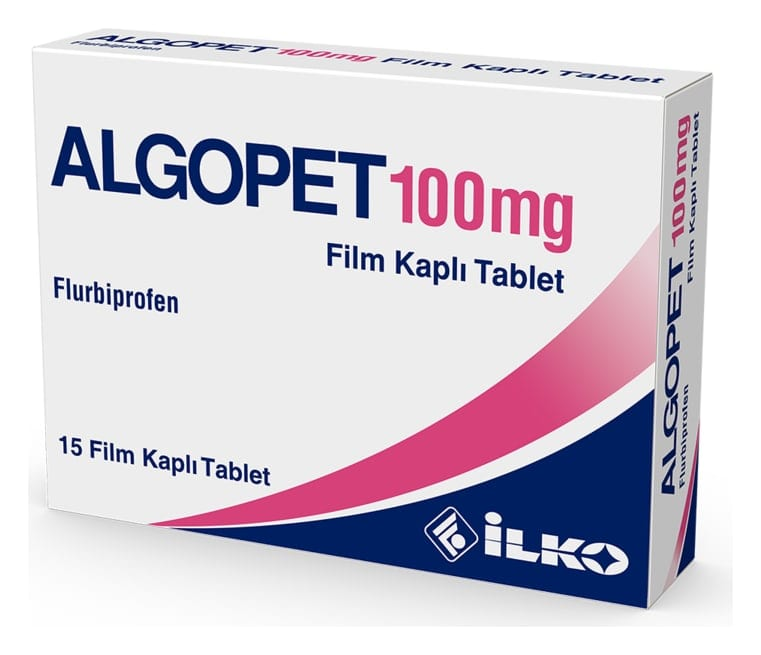

Algopet 100 mg Film Kaplı Tablet, 15 Adet

Ne için kullanılır
KT · Bölüm 1ALGOPET mavi renkli, oval şekilli, bir yüzü çentikli, film kaplı tablettir. Her bir film kaplı tablet 100 mg flurbiprofen içerir. 15 ve 30 tabletlik blister ambalajlarda kullanıma sunulmuştur. ALGOPET çeşitli ağrıları ortadan kaldırmak ya da hafifletmek amacı ile kullanılan steroid olmayan antiinflamatuvar ilaçlar (NSAİİ) olarak bilinen grupta yer alır. ALGOPET; • Eklemlerde ağrı, şişlik ve şekil bozukluğuna neden olan devamlı (kronik) bir hastalık • (romatoid artrit) • Eklemlerin aşınması sonucu ortaya çıkan ve halk arasında kireçlenme olarak da bilinen bir • hastalık (osteoartrit) • Eklemlerde ağrı, şişlik ve şekil bozukluğuna neden olan devamlı (kronik) bir hastalık • (Ankilozan spondilit) • Akut kas iskelet sistemi ağrıları • Akut gut artriti • Adet ağrısı (dismenore) tedavisinde kullanılır.